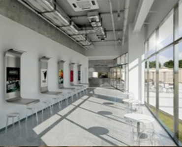

건축
건축
도시의 풍경을 바꾸는 기술과 디자인
코오롱글로벌 건축부문은 앞선 기술과 친환경 건축 철학을 바탕으로 업무ㆍ교육ㆍ연구ㆍ공장ㆍ스포츠 및 레저시설 등 생활에 필요한 모든 형태와 용 도의 건축물을 짓고 있습니다. 1997년 과천코오롱신사옥에 이어 2000년 인천연수구청의 한국건축문화대상 수상을 통 해 한국 건축사를 새롭게 썼으며, 뛰어난 외관으로 유명한 잠 실 올림픽수영장, 국내 영화사 백년 의 상징인 단성사 신축. 6만 5000석 규모의 대구월드컵경기장, 김해국제공항 관제탑, 대구야외음악당, 아시아드C.C 등 기능성과 미관을 동시에 충족시키는 건축물로 대한민 국의 스카이라인을 바꾸었으며, 삶의 질을 높여 왔습니다.
주요 실적
-
크리스챤디올 매장 신축공사
발주처크리스챤디올 코리아
공사기간2013.06.24~ 2015.05.18
위치서울시 강남구 청담동 98-3
공사규모지하4층, 지상5층
하우스 오브 디올은 혁신적이고 유니크한 건물은 건축계의 노벨상이라 불리는 프리츠커 상 수상에 빛나는 프랑스 건축가 크리스챤 드 포잠박(Christian de Portzamparc)이 설계했으며 인테리어는 세계적인 건축가 피터 마리노(Peter Marino)가 디자인 했습니다. 피터 마리노가 디자인한 인테리어는 몽테뉴가의 아이코닉한 디올 부띠크에서 받은 영감을 여성스럽고 화려한 미학의 형태로 풀어 내었고, 모던하면서도 변치 않는 우아함을 통해 구석구석 모든 디테일까지 아름답게 장식한 브랜드의 열의를 드러냅니다.
-
KT영동비즈니스호텔
발주처주식회사케이티
공사기간2012.06.01~ 2014.07.31
위치서울시 강남구 역삼동 675-3번지
공사규모지하5층, 지상15층
코오롱 글로벌은 고도의 기술력과 풍부한 경험을 바탕으로 탁월한 기능과 미적 가치를 갖춘 호텔입니다. kt영동비즈니스호텔은 단순한 비즈니스 호텔을 넘어서 도시의 얼굴이 되며 , 도시의 품격을 한층 높여주는 랜드마크로 완성됩니다. 또한, 신라호텔과의 협업을 통해 세계적 수준의 비즈니스 호텔로 서울의 대표적인 랜드마크가 되었습니다.
-
포항역사 신축공사
발주처한국철도시설공단
공사기간2013.09.23~ 2015.05.29
위치경북 포항시 북구 흥해읍 이인리 126답
공사규모지상3층
포항역사는 KTX 운행을 위해 지상 3층, 연면적 6,232m² 규모로 열차사업소, 기관차사업소 및 필요한 시설이 증축되었다. 포항역사는 고래와 파도를 상징화해 포항시의 역동적인 모습을 형상화했으며, 태양광과 지열을 이용한 신재생에너지 설비 및 친환경 자재를 사용 장애인, 임산부 및 노약자들이 쉽게 KTX열차를 이용할 수 있도록 '장애물 없는 생활환경' 최우수 등급의 현대식 건물로 건설되었다.